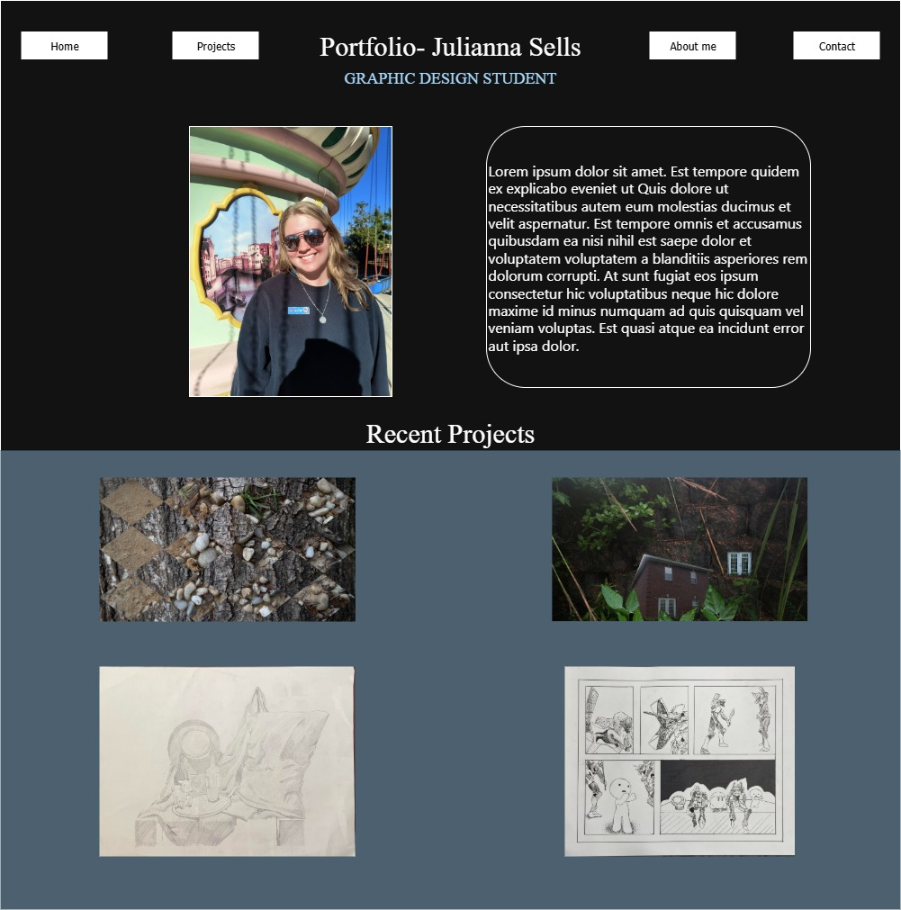
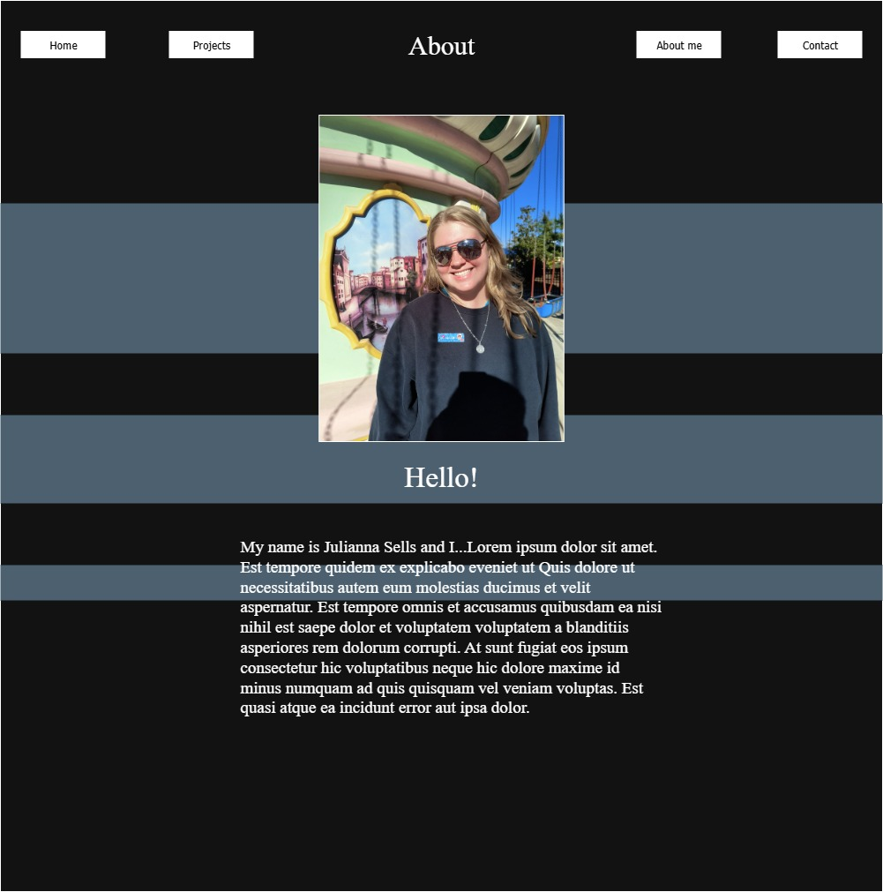
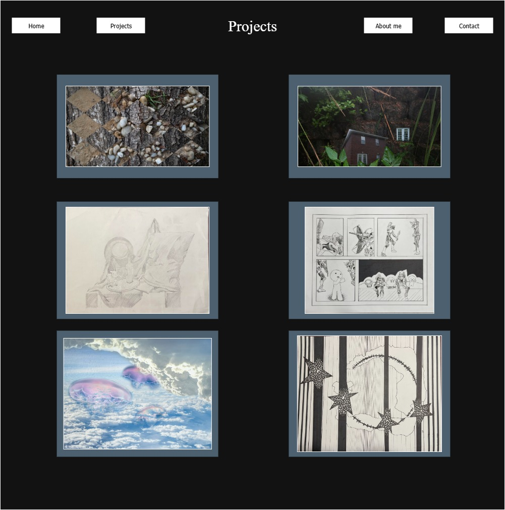
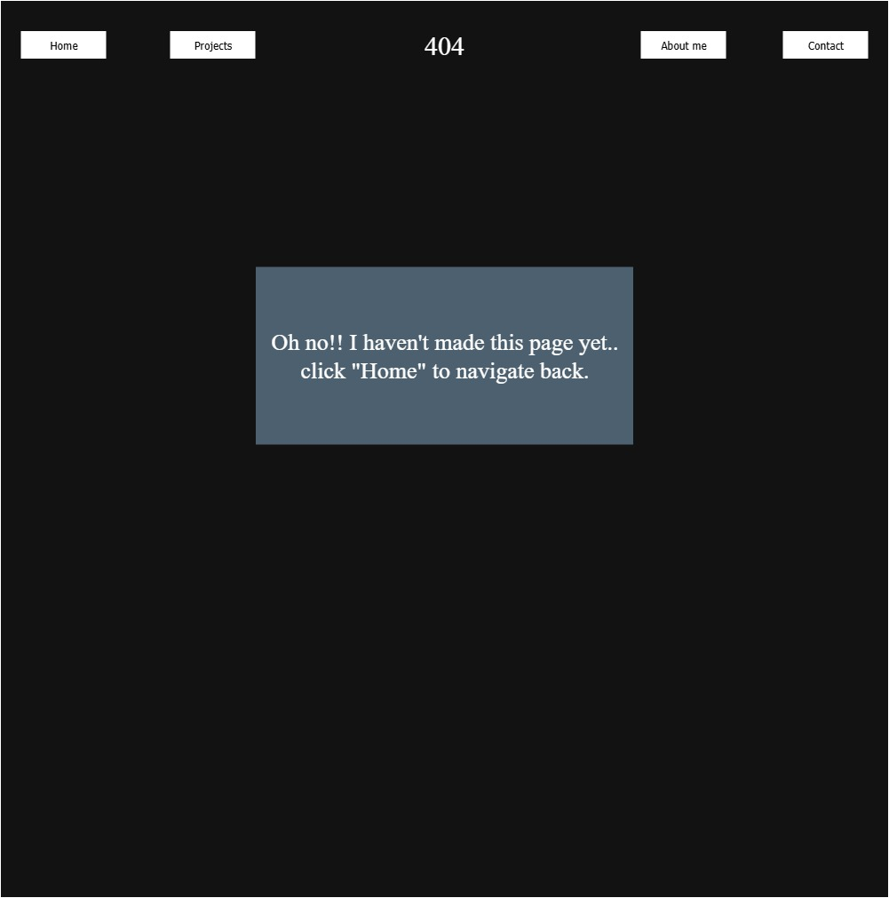

Hello! When designing my portfolio I wanted to try my best to follow a grid concept. I also started on the app in dark mode which inspired me to have a darker color palette.Right now I am working with four main colors. A dark blue, black, white, and a bright turquoise. I am only using the turquoise on one section fo text, but I plan to utilize it more as I adjust my portfolio later on. I think starting with a dark background allows for me to add brighter elements to draw a viewer's eye later on. I hope everyone enjoys my work so far. Enjoy your trip home



